Digital Manufacturing – Part 2
Digital Manufacturing

Università di Trento, Dipartimento di Ingegneria Industriale
Updated: 04/10/2026
C Programming recap
#include <stdlib.h>
#include <stdio.h>
int main(int argc, char const *argv[]) {
/* declarations */
double result, factor[2];
unsigned int i;
int result = 0;
// code
if (argc != 3) {
fprintf(stderr, "I need two arguments, got %d\n", argc);
result = -1;
}
for (i = 0; i < 2; i++) {
factor[i] = atof(argv[i + 1]);
}
result = factor[0] * factor[1];
printf("%f * %f = %f\n", factor[0], factor[1], result);
return result;
}- keywords starting with “
#” are preprocessor directives #includeloads locally an external C file#include <...>searches in system path#include "..."searches locally
C Programming recap
#include <stdlib.h>
#include <stdio.h>
int main(int argc, char const *argv[]) {
/* declarations */
double result, factor[2];
unsigned int i;
int result = 0;
// code
if (argc != 3) {
fprintf(stderr, "I need two arguments, got %d\n", argc);
result = -1;
}
for (i = 0; i < 2; i++) {
factor[i] = atof(argv[i + 1]);
}
result = factor[0] * factor[1];
printf("%f * %f = %f\n", factor[0], factor[1], result);
return result;
}- Functions are declared with:
- return type
- name
- list of arguments
- Functions are defined with:
- everything above
- plus body
C Programming recap
#include <stdlib.h>
#include <stdio.h>
int main(int argc, char const *argv[]) {
/* declarations */
double result, factor[2];
unsigned int i;
int result = 0;
// code
if (argc != 3) {
fprintf(stderr, "I need two arguments, got %d\n", argc);
result = -1;
}
for (i = 0; i < 2; i++) {
factor[i] = atof(argv[i + 1]);
}
result = factor[0] * factor[1];
printf("%f * %f = %f\n", factor[0], factor[1], result);
return result;
}int main(int, char const **)is the mandatory entry point for any C programargcis the number of arguments received from command line, plus 1argv[]is the array of argumentsargv[0]is the program name
C Programming recap
#include <stdlib.h>
#include <stdio.h>
int main(int argc, char const *argv[]) {
/* declarations */
double result, factor[2];
unsigned int i;
int result = 0;
// code
if (argc != 3) {
fprintf(stderr, "I need two arguments, got %d\n", argc);
result = -1;
}
for (i = 0; i < 2; i++) {
factor[i] = atof(argv[i + 1]);
}
result = factor[0] * factor[1];
printf("%f * %f = %f\n", factor[0], factor[1], result);
return result;
}Comments can be:
// single line/* multiline */
C Programming recap
#include <stdlib.h>
#include <stdio.h>
int main(int argc, char const *argv[]) {
/* declarations */
double result, factor[2];
unsigned int i;
int result = 0;
// code
if (argc != 3) {
fprintf(stderr, "I need two arguments, got %d\n", argc);
result = -1;
}
for (i = 0; i < 2; i++) {
factor[i] = atof(argv[i + 1]);
}
result = factor[0] * factor[1];
printf("%f * %f = %f\n", factor[0], factor[1], result);
return result;
}C Programming recap
#include <stdlib.h>
#include <stdio.h>
int main(int argc, char const *argv[]) {
/* declarations */
double result, factor[2];
unsigned int i;
int result = 0;
// code
if (argc != 3) {
fprintf(stderr, "I need two arguments, got %d\n", argc);
result = -1;
}
for (i = 0; i < 2; i++) {
factor[i] = atof(argv[i + 1]);
}
result = factor[0] * factor[1];
printf("%f * %f = %f\n", factor[0], factor[1], result);
return result;
}C Programming recap
#include <stdlib.h>
#include <stdio.h>
int main(int argc, char const *argv[]) {
/* declarations */
double result, factor[2];
unsigned int i;
int result = 0;
// code
if (argc != 3) {
fprintf(stderr, "I need two arguments, got %d\n", argc);
result = -1;
}
for (i = 0; i < 2; i++) {
factor[i] = atof(argv[i + 1]);
}
result = factor[0] * factor[1];
printf("%f * %f = %f\n", factor[0], factor[1], result);
return result;
}Output: printf, fprintf, sprintf, asprintf
Channels:
stdoutstderrFILEpointer
C Programming recap
#include <stdlib.h>
#include <stdio.h>
int main(int argc, char const *argv[]) {
/* declarations */
double result, factor[2];
unsigned int i;
int result = 0;
// code
if (argc != 3) {
fprintf(stderr, "I need two arguments, got %d\n", argc);
result = -1;
}
for (i = 0; i < 2; i++) {
factor[i] = atof(argv[i + 1]);
}
result = factor[0] * factor[1];
printf("%f * %f = %f\n", factor[0], factor[1], result);
return result;
}Input:
- from command line (
argv) - from environment
- from files
- from sockets
- from
stdin
Never interactive (gets(), scanf())
C Compound Types
- Structs: for collecting many variables in a single “object”
- Unions: for accessing the same memory as if it were of different types
- Enums: for finite set of symbols
Best Practices
#include <stdlib.h>
#include <stdio.h>
int main(int argc, char const *argv[]) {
/* declarations */
double result, factor[2];
unsigned int i;
int result = 0;
// code
if(argc!=3){
fprintf(stderr, "I need two arguments, got %d\n", argc);
result=-1;
}
for (i = 0; i < 2; i++) {
factor[i] = atof(argv[i + 1]);
}
result = factor[0] * factor[1];
printf("%f * %f = %f\n", factor[0], factor[1], result);
return result;
}- Proper indentation (if not, < 18/30)
- Proper spacing
- On Visual Studio Code, use Format Document
Compare this with code in previous slides!
Best Practices
- Put variables declarations at the beginning of each block
- Only one exit point per function (except for errors)
- Factorize code (= Don’t Repeat Yourself: DRY)
- Use clean, extended names for functions and variables of general usage (short names OK for local variables)
From Source to Runtime
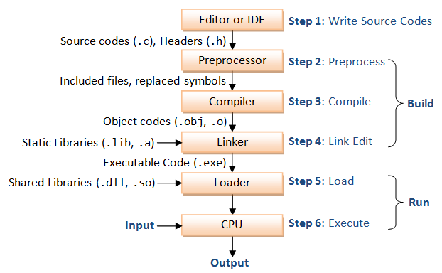
From Source to Runtime
- C Header files (.h) — elegant solution for:
- organizing code on many files
- reusing code, even in form of compiled library
- On build-time, only headers are used
- On link-time and runtime, only libraries are needed and used (no headers)
Building your code
Build command needs:
Build time
- switches for compile configuration
- location of system and special header files
- list of files to compile
Link time
- switches for linking configuration
- location of system and special libraries
- list of files to link
Building your code
Typical compilation command:
- Most common compilers are
gccandclang(we’ll useclang) - The
[options]list and the list of source files can be long and tedious to type
Building assistants: IDE or CLI
- GNU Make: command-line program for building complex projects via special scripts called Makefiles. A Makefile is typically complex to write and maintain
- CMake: command-line program that takes a configuration file (
CMakeLists.txt) and generates a temporary building environment (typically using GNU Make). Easier to write and maintain than Makefile
CMake Script
Steps:
- project setup
- define common switches
- define headers and library locations
- define targets
- define install behavior
cmake_minimum_required(VERSION 3.9)
set(CMAKE_C_COMPILER "clang")
# Set project name, version, and language
project(C-CNC VERSION 0.0.1 LANGUAGES C)
# Set common compile options and preprocessor definitions
add_compile_options(-std=gnu11 -fPIC)
add_definitions(-D_GNU_SOURCE)
# Define the list of source files
set(SOURCE_DIR ${CMAKE_HOME_DIRECTORY}/src) #set a variable
file(GLOB LIB_SOURCES "${SOURCE_DIR}/*.c") #put into LIB_SOURCES the globbed list
# Parametrically create some file from template
configure_file(
${SOURCE_DIR}/version.h.in
${SOURCE_DIR}/version.h
)
# define header directories
include_directories(
${CMAKE_HOME_DIRECTORY}/machine/src
)
# Define TARGETS, i.e. output objects
# Library target:
add_library(ccnclib STATIC ${LIB_SOURCES})
target_link_libraries(ccnclib machine)
# Main executable
add_executable(ccnc ${SOURCE_DIR}/main/ccnc.c)
add_dependencies(ccnc ccnclib)
target_link_libraries(ccnc ccnclib)
# INSTALL
set(CMAKE_INSTALL_PREFIX ${CMAKE_HOME_DIRECTORY})
install(TARGETS ccnclib ccnc
RUNTIME DESTINATION bin
LIBRARY DESTINATION lib
ARCHIVE DESTINATION lib
)CMake
Building with cmake takes 2+1 steps:
- Configuration:
cmake -Bbuild_dir - Building:
cmake --build build_dir - Installing:
cmake --build build_dir -t install
Alternatively, after configuration, make can be used:
make -Cbuild_dirmake -Cbuild_dir install
Programming C as a Pro
Problem 1:
- complex programs are made of many functions that have to pass around data. C function arguments are passed by value (i.e. copied!)
- for good performance you need to minimize info passed by functions
Solution: learn to use pointers
Programming C as a Pro
Problem 2:
- C function can only return a single value
- C functions cannot return compound types (arrays!)
Solution: learn to use pointers
Programming C as a Pro
Problem 3:
- complex programs are made of many functions
- they also depend on external libraries
- the code must be readable and understandable
Solution: carefully distribute code in different files, and use flexible build software
Stack vs. Heap memory
FIFO access (fast)
Typ. ~8 Mb capacity per thread (check with command ulimit -s)
Random access (slower)
Virtually unlimited
Tricky Pointers
- Standard variables are defined on the stack memory
- You get the pointer to variable
varwith&var - You get the value of pointer
var_pwith*var_p - Arrays are pointers to their first element, but stack arrays have a limited maximum size (system dependent)
- Variables on stack are eliminated from memory on exiting from local scope
Tricky Pointers
- Pointers requiring large (or dynamic) memory can be defined on the heap memory
- You allocate a pointer on the heap with the
malloc()family of functions malloc’d variables are not freed upon exiting from local scope- For every
malloc()you need onefree(), or you have a memory leak ☠️☠️☠️
Ways for returning an array in C
- Use
malloc()in the caller and pass the pointer as an inout argument (easier) - Call
malloc()inside the function and return that pointer (easy, but you cannot return anything else, like error status) - Pass a double pointer to the callee as an inout argument, use
malloc()inside the function (not so easy, but you can also return a status value)
NOT SO easy: Case one (not working)
Case one — step 1
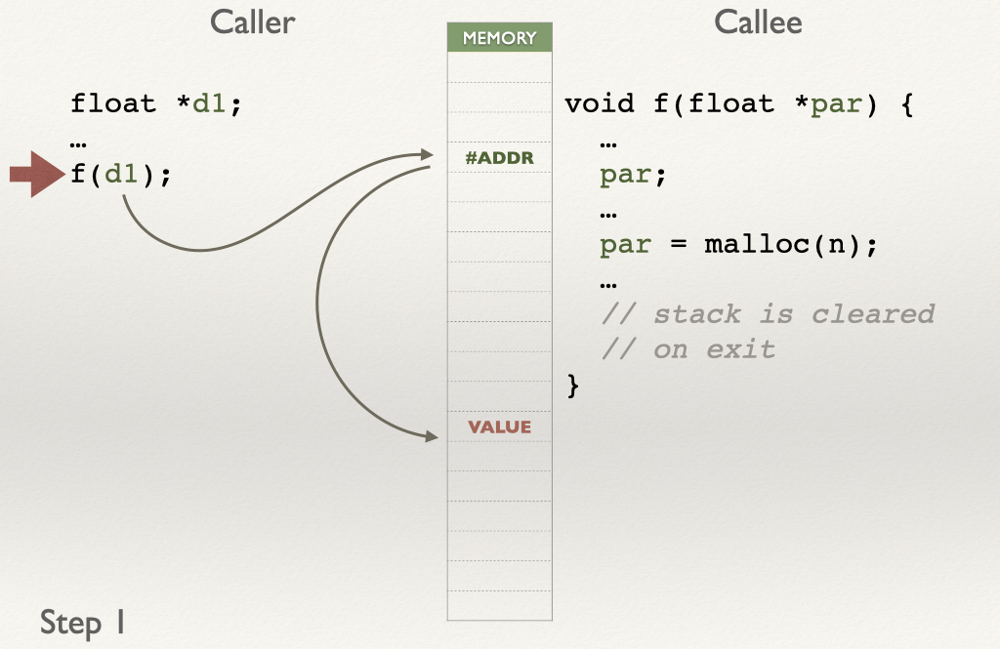
Case one — step 2
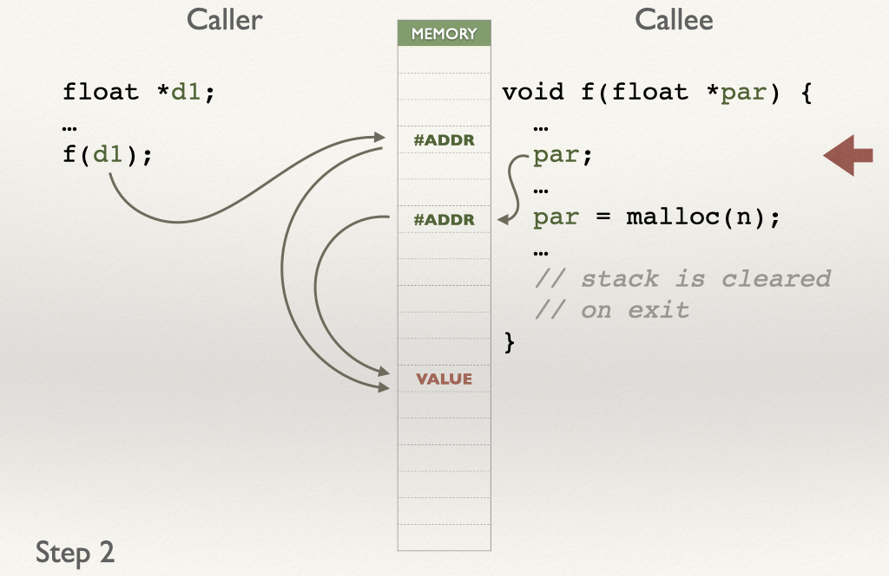
Case one — step 3

Case one — step 4
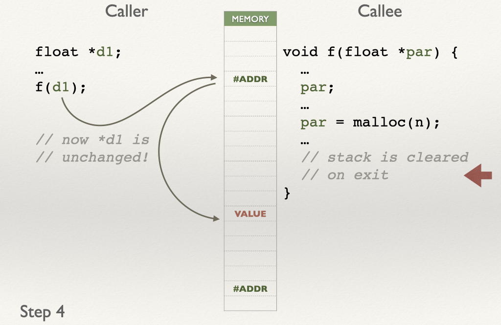
NOT SO easy: Case TWO (working)
Case two — step 1
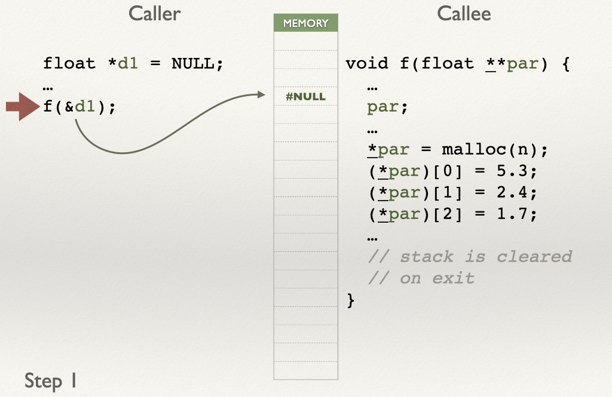
Case two — step 2
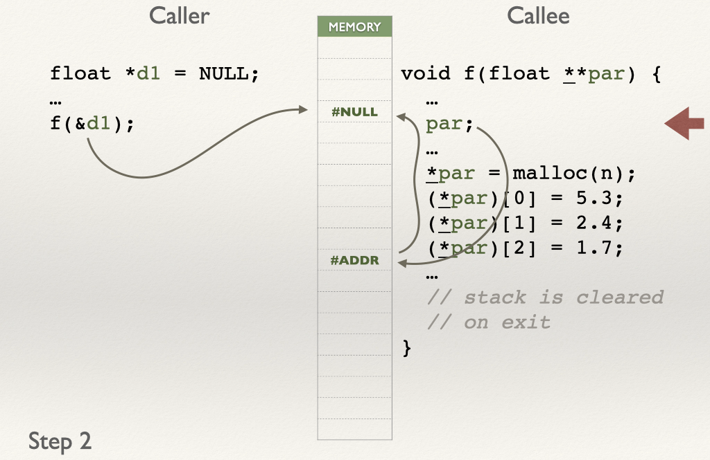
Case two — step 3
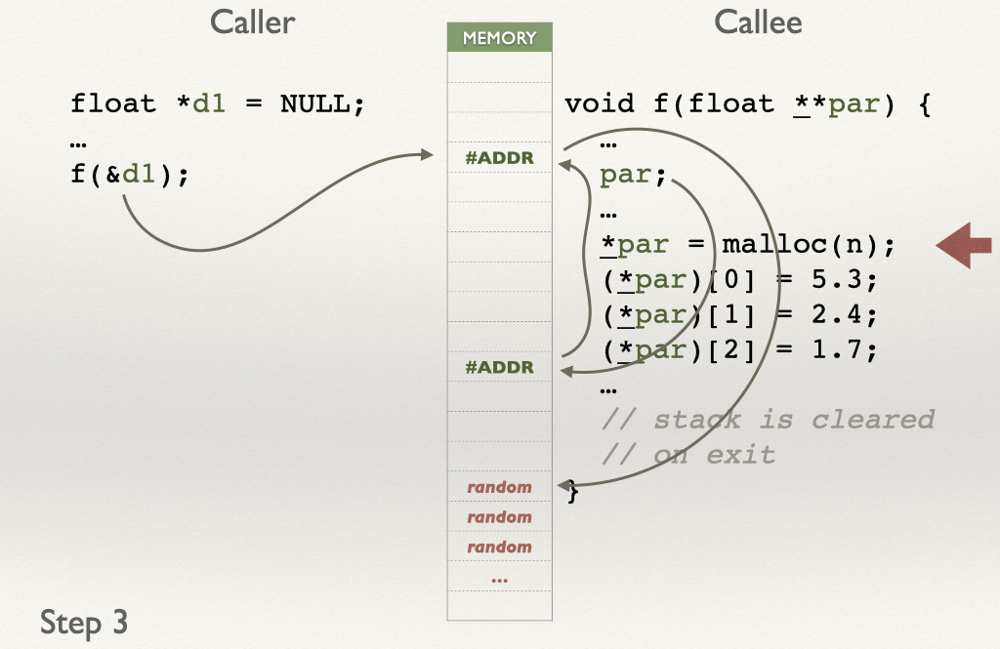
Case two — step 3 (cont.)
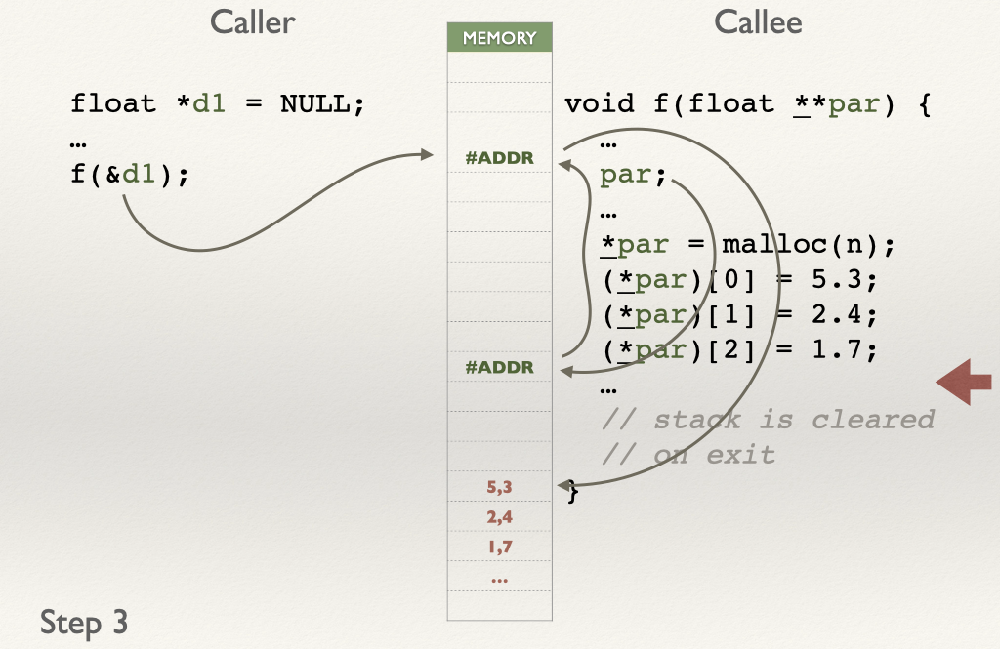
Case two — step 5
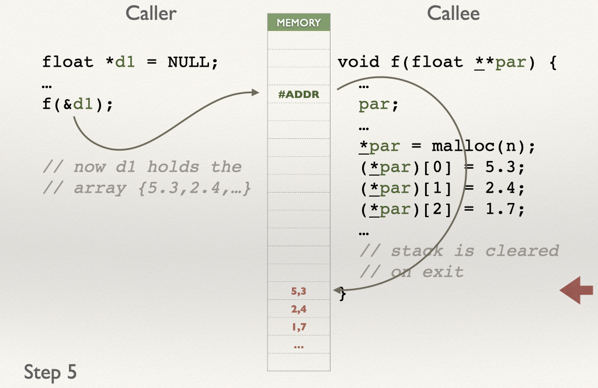
Memory leaks
Memory leaks — step 3
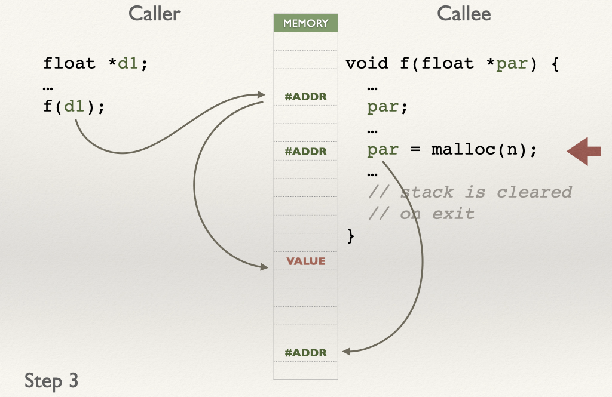
Memory leaks — step 4
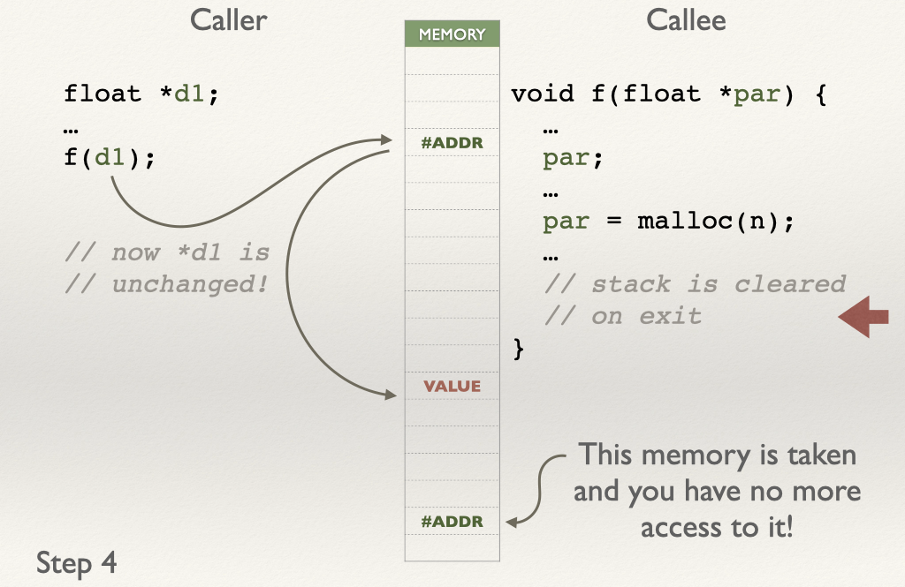
Memory leaks
- There must be exactly one
free()for everymalloc() - Sometimes the
malloc()is implicit, e.g.asprintf()and similar functions (those that take double pointers for allocating and returning an array!) - Leaked memory is restored on process exit
- BUT, long running processes MUST avoid memory leaks, especially when the leak occurs within loops
MQTT basics
MQ Telemetry Transport protocol — using C language and Mosquitto broker
MQTT protocol
- MQTT stands for Message Queue Telemetry Transport
- Actually, there is no queue but rather a publish-subscribe architecture
- The protocol is lightweight: it minimizes the overhead of messages
- It is about 100 times faster than REST HTTP messaging (in terms of maximum msg/s)
- It is not the fastest protocol (ZeroMQ is faster), but it is simple to implement and well balanced
MQTT protocol
- In MQTT there are 3 different roles: publisher, subscriber, broker
- The publisher is the information producer (to be implemented)
- The subscriber is the information consumer (to be implemented)
- The broker is a server that relays publisher messages to (possibly many) subscribers (already available)
- Messages are published under topics
- Topics are arranged hierarchically:
ccnc/x/pos,ccnc/y/vel
MQTT protocol
Subscribers can subscribe to more than one topic, possibly also using wildcards (+ or #):
ccnc/+/posmeans any single word in betweenccncandpos(asccnc/x/posandccnc/y/pos, but notccnc/x/nominal/pos)ccnc/#/posmeans anything (including multiple branches) underccncand ending with/pos
MQTT protocol
- Publishers can publish messages to many different topics, but one at a time (no wildcards!)
- A message is also called a payload: any sequence of bytes, up to a maximum 268435456 bytes (\(2^{28}\), ~260 Mb)
- Bigger payloads need to be split (or compressed)
- Messages are assigned with a quality of service level (QoS) and with an optional retain flag
MQTT protocol
The QoS level states the reliability of a message:
- QoS 0: a message is delivered at most once
- QoS 1: a message is delivered at least once
- QoS 2: a message is delivered exactly once
QoS 0 is “fire-and-forget”: less reliable but with minimum information exchange. QoS 2 has a delivery confirmation: 100% reliable, but slower
MQTT protocol
- The retain flag, when set, instructs the broker to deliver the message to any subscriber connecting in the future
- It is a kind of “last known value” clause
- There are also last will and testament (LWT) messages: these are messages delivered as soon as the broker detects that the client has disconnected
- Note: the roles of publisher and subscriber are semantic: any given process can simultaneously act as publisher and subscriber, if needed. Both are clients of the broker server
MQTT Applications
- There are many available broker services, like mosquitto, Paho, HiveMQ, Mosca, EMQ X, VerneMQ.
- As well, there are many libraries for implementing MQTT clients (pub+sub) in virtually any known programming language
- We will refer to
mosquitto(the broker) andlibmosquitto(the C library)
MQTT Broker
The mosquitto broker can be installed as a linux service, but it is much quicker and easier to use a docker container:
-d --rm: as daemon, remove on exit--name mosquitto: give it a name-p 1883:1883: expose port 1883-v ...: config fileeclipse-mosquitto: name of the image
MQTT Broker
The mosquitto config file (mosquitto.conf) typically contains at minimum:
allow_anonymous true
listener 1883
protocol mqttThis accepts any connection. In production, you might want to require passwords and encrypted connections.
MQTT library
- Documentation is on https://mosquitto.org/api
- The library namespace is
mosqpp, the main class ismosquittopp - Typical sequence of operation:
- Start > library init > client init > client connect > set callbacks > loop { publish messages & update sockets } > free resources > stop
- Callbacks are methods automatically called on given events (e.g. successful connection, receiving subscribed message, …)
MQTT library
- Library init:
mosqpp::lib_init()- It simply MUST be called before any other mosquitto call
- Library cleanup:
mosqpp::lib_cleanup()(in destructor)
MQTT library
- Client init:
auto mqt = mosquittopp(id, clean)id: can be a name (useful for debugging, only visible to the broker)clean: ask the broker to delete all messages and subscriptions on disconnect
- Typically, you derive a class from
mosquittopp
MQTT library
- Client connect:
mosquittopp::connect(broker_addr, broker_port, keepalive)- Connect the object to a given broker host and port
- The broker pings the client (if no messages arrive) every
keepaliveseconds to verify if it is connected
MQTT library
- Implement callbacks:
mosquittopp::on_message(const struct mosquitto_message *message)(et similia)- Object calls
on_messageeach time a message is received
- Object calls
MQTT library
All network operations are just scheduled by subscribe and publish functions. They are actually performed in two alternative ways:
- By repeatedly/cyclically calling
mosquittopp::loop()(preferred if you already have a loop) - By starting a parallel thread that iteratively calls
mosquittopp::loop(): this is done by callingmosquittopp::loop_start()just aftermosquittopp::connect()
MQTT library
- To schedule the publishing of a message, use
mosquittopp::publish(mid, topic, len, payload, qos, retain)- The payload is any sequence of
lenbytes (a string or a binary object) - The message ID
midis typicallyNULL
- The payload is any sequence of
MQTT library
- When a message is received, the
on_messagecallback is executed - It gets the message as a
struct mosquitto_message, which contains:- Message ID (if any), topic, payload, payload length, QoS level, retain flag.
- It does not contain any info on the publisher!
- The subscriber HAS NO WAY for identifying the publisher (unless it is written in the payload or topic)
MQTT library
When done, you should, in this order:
- Unsubscribe all subscriptions
- Call
mosquittopp::loopormosquittopp::loop_stop - Disconnect from broker
- Call
mosqpp::lib_cleanup
MQTT tools
- The
mosquitto-clientspackage installs the pair of commandsmosquitto_pubandmosquitto_sub - MQTT explorer is a useful graphical tool for tapping into MQTT dataflows: http://mqtt-explorer.com
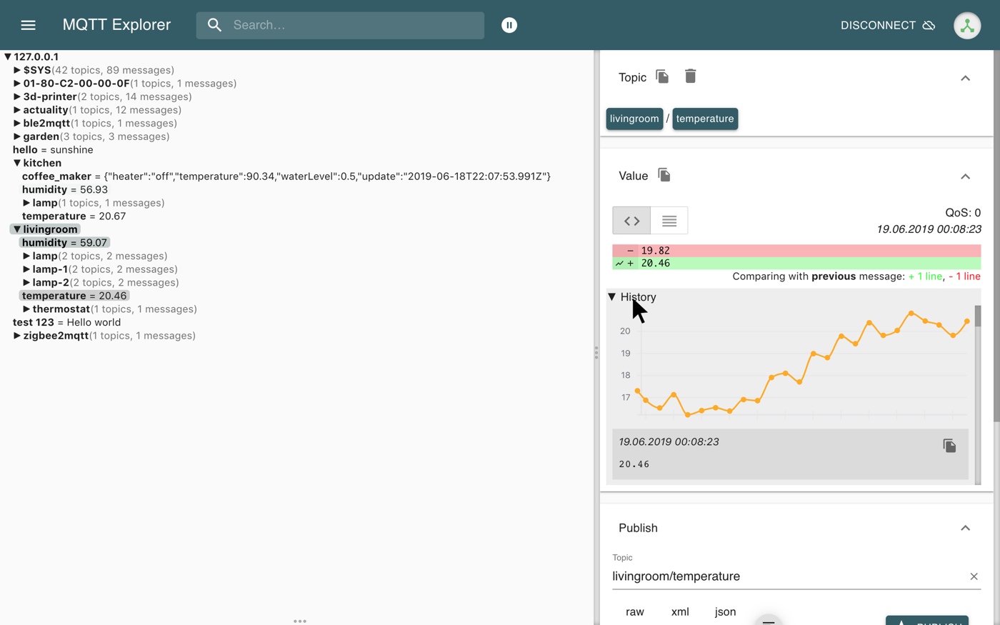
Cargo Cult
If it looks like a plane, that doesn’t necessarily mean it can fly. What you definitely don’t want to do in engineering!
Cargo cult in anthropology
- A cargo cult is a belief system, in which adherents perform rituals which they believe will cause a more technologically advanced society to deliver goods
- Many examples in remote Pacific islands, where inhabitants replicate US army “rituals” in the hope of calling a cargo delivery
Cargo Cult programming/engineering
Typical pattern:
- You don’t know how to solve a problem
- You type “How to do something in my language?” in Google (or ChatGPT!)
- You end up on Stackoverflow (or similar sites) or get an AI-generated code
- You copy and paste the first solution, which you cannot fully understand but it seems to work
Why is that a bad habit?
- At best, it messes up your coding style (e.g. using
variableNamesrather thanvariable_names) - You may look amateur and naïve to those who read your code (among them, your prospective employer!)
- Foremost, you are losing control on your code, which may work fine in the stackoverflow/AI example, but much probably does hidden nasty things once embedded in your code
- Additionally, your problem understanding does not improve
Doesn’t happen only when you code
- There are many examples of cargo cult engineering as well
- Each time you accept an existing solution just because it works in another emplacement, and without fully understanding it, you are a cargo cultist
- Always question any solution; ask why; do not accept any solution that you cannot fully understand, at least in its outer structure (input/output relations, interfaces, specifications)
Personal project: tool diameter compensation
Complete this to skip the exam
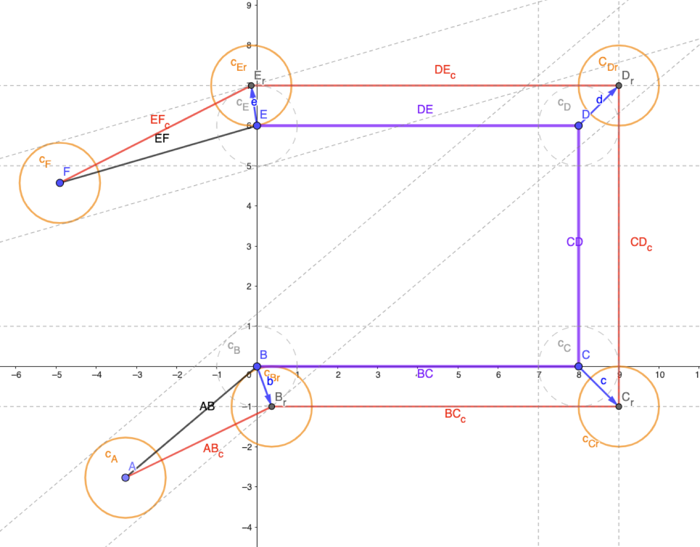
Tool radius compensation
- G-code standard supports a feature for offsetting the tool trajectory to the left or to the right of the trajectory by an amount equal to the tool radius
- This is only affecting the X-Y projection of the trajectory, Z values remain unchanged
- The TRC is set to the left with
G41, to the right withG42and is disabled withG40 - TRC is fully active at the end of the current block
Tool radius compensation
- TRC offsets the tool center path (programmed points) according to
G41/G42 - New target points are calculated for each block on the basis of the offset intersection with the next block (arc or line)
- Disabled for rapid motions
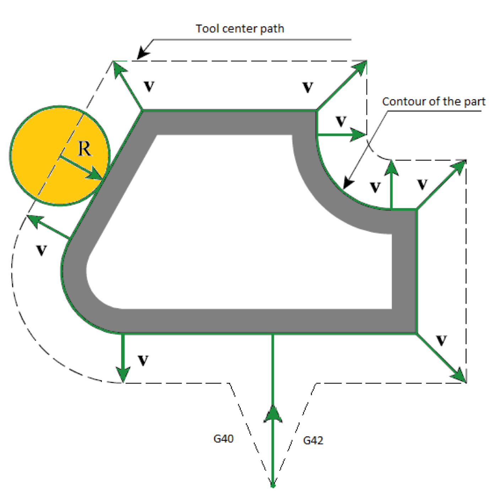
Tool radius compensation
Interactive example on https://www.geogebra.org/m/mcv4egvk
Tool radius compensation
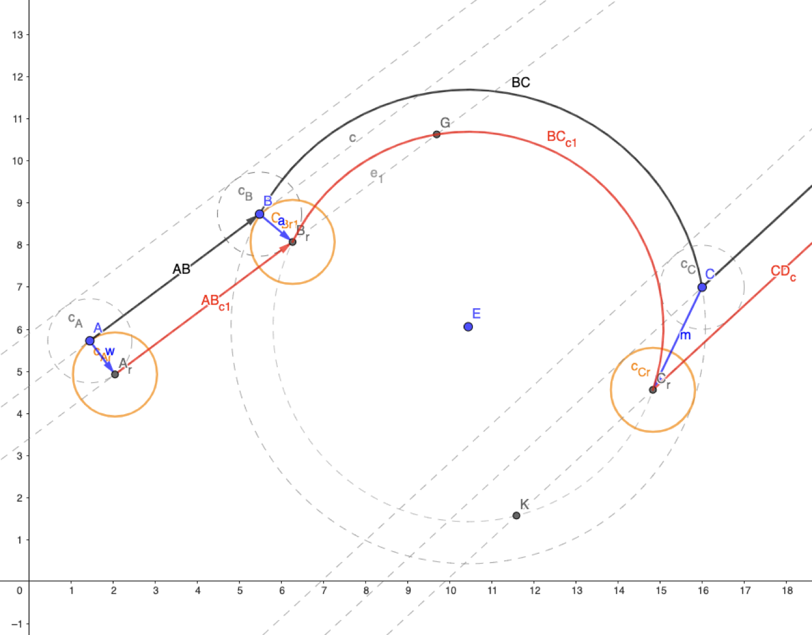
Interactive example on https://www.geogebra.org/m/uwaa7u4v
Tool radius compensation
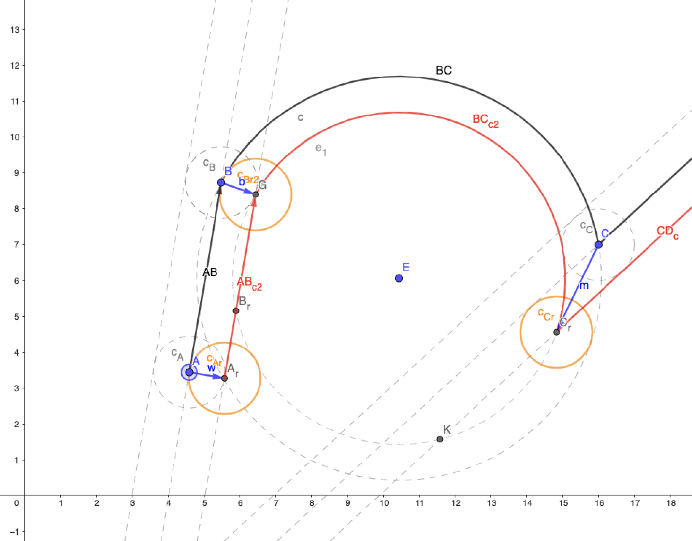
Interactive example on https://www.geogebra.org/m/uwaa7u4v
Line-Line case
We need to calculate the point \(D\):
- Given the line equation \(y = ax + b\), we need to calculate the equation of the offset line(s)
- Calculate \(D\) as intercept between the two offset lines
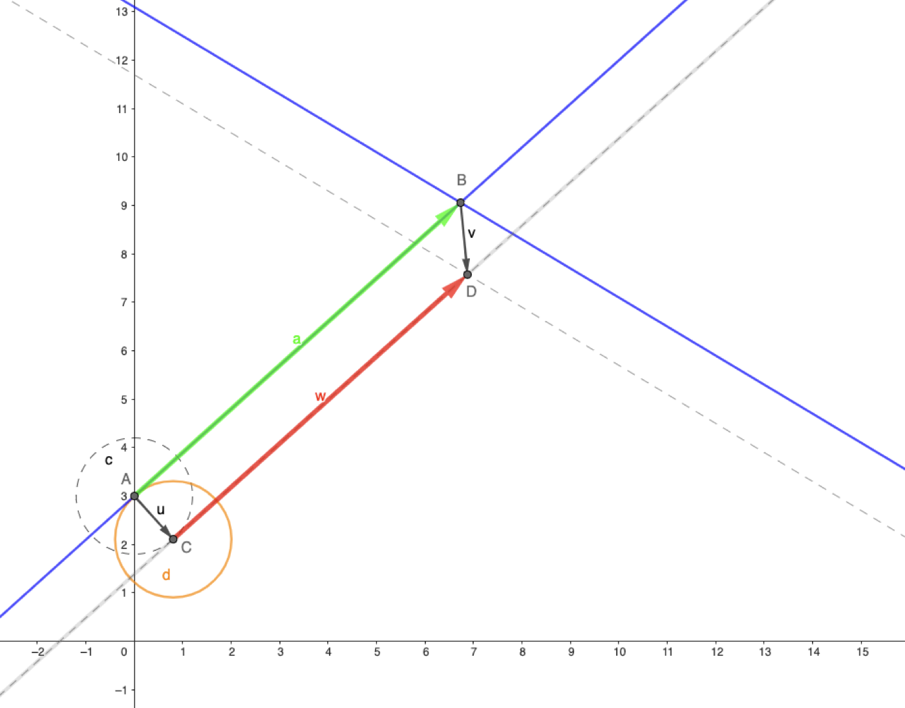
Line-Line case
- Given \(y = ax + b\), the equation of the offset line is \(y = ax + b - v\)
- Being \(a = u/r\), it follows that: \(v = \sqrt{u^2 + r^2} = r\sqrt{a^2 + 1}\)
- So, \(y = ax + b \pm r\sqrt{a^2 + 1}\)
- The sign depends on G41/G42 and on the path direction
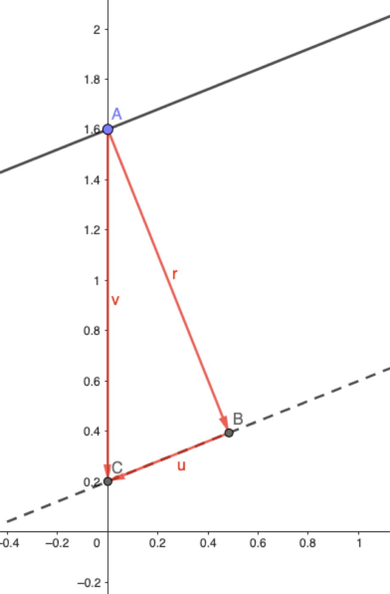
Line-Line case
Intersection \(D\) between
\(y = a_1 x + b_1 - v_1 = a_1 x + b_{o,1}\)
and
\(y = a_2 x + b_2 - v_2 = a_2 x + b_{o,2}\)
has coordinates:
\[(x_i, y_i) = \left(\frac{b_{o,2} - b_{o,1}}{a_1 - a_2}, \frac{b_{o,1}a_2 - b_{o,2}a_1}{a_2 - a_1}\right)\]
Line-Line case
- Exception: when two segments are collinear (\(a = a_1 = a_2\)), the intercept is undefined
- The new intersection node is set at an offset \(r\) perpendicular to the segments
\[C = \begin{cases} (0, -r), & \text{when } a = 0 \\ r(s, -s/a) \text{ with } s = \frac{a}{|a|}\sqrt{\frac{a^2}{1 + a^2}}, & \text{otherwise} \end{cases}\]
Interactive example on https://www.geogebra.org/m/pmdtaprr
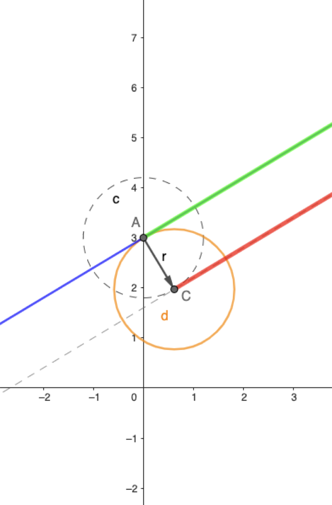
Line-Arc (or Arc-Line) case
Similar to line-line case, but with a caveat:
- Line-circle intersection gives two points, \(G\) and \(B_r\): you have to select the intersection that is closer to the node to be offset (\(B\) in figure)
Interactive example on https://www.geogebra.org/m/uwaa7u4v
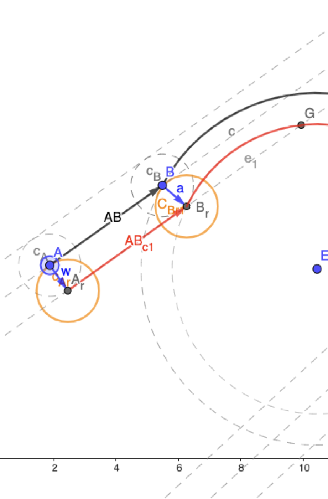
Line-Arc (or Arc-Line) case
Similar to line-line case, but with a caveat:
- Line-circle intersection gives two points, \(G\) and \(B_r\): you have to select the intersection that is closer to the node to be offset (\(B\) in figure)
Interactive example on https://www.geogebra.org/m/uwaa7u4v
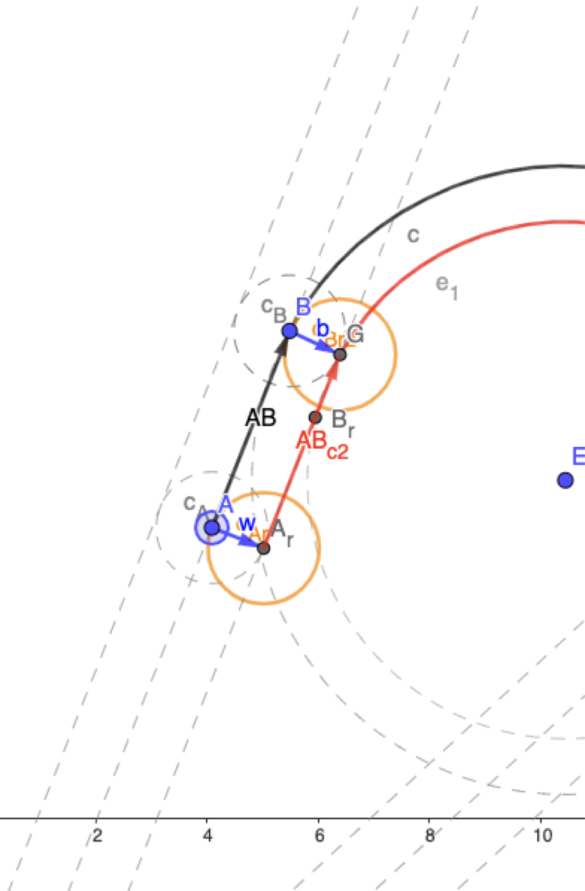
Code changes
Support for G40/G41/G42
- An
enum class TRCTypewithNONE,LEFT,RIGHT - An
TRCType _trcfield in theBlockTRCclass - Proper code in
BlockTRC::parse() _trcshall be managed as a modal field (i.e. inherited from previous block)
Code changes
Support for tool radius
- The YML file needs to have a field as:
tools: [10.0, 8.0, 5.0, 2.5]giving the list of available tools and respective radiuses - The
Machineclass needs to properly load the tool list into a new field:vector<data_t> _tools - Add
machine::tool_radius(), which returns the radius of a given tool number
Code changes
Support for offset calculation
- The method
Block::parse()needs to change the target of the previous block if the previous block has_trc != TRCType::NONE - The target must be changed according to the equations shown above and the radius of the current tool
Code changes
Support for offset calculation
- Equations for intersections possibly require:
Block::angle_with_prev(): angle in radians with previous blockBlock::equation(): returns \(a\) and \(b\) as output parameters (refs); for an arc, parameters of the implicit equation \((x - x_c)^2 + (y - y_c)^2 = r^2\) are available already
- These functions can be private
Advanced TRC
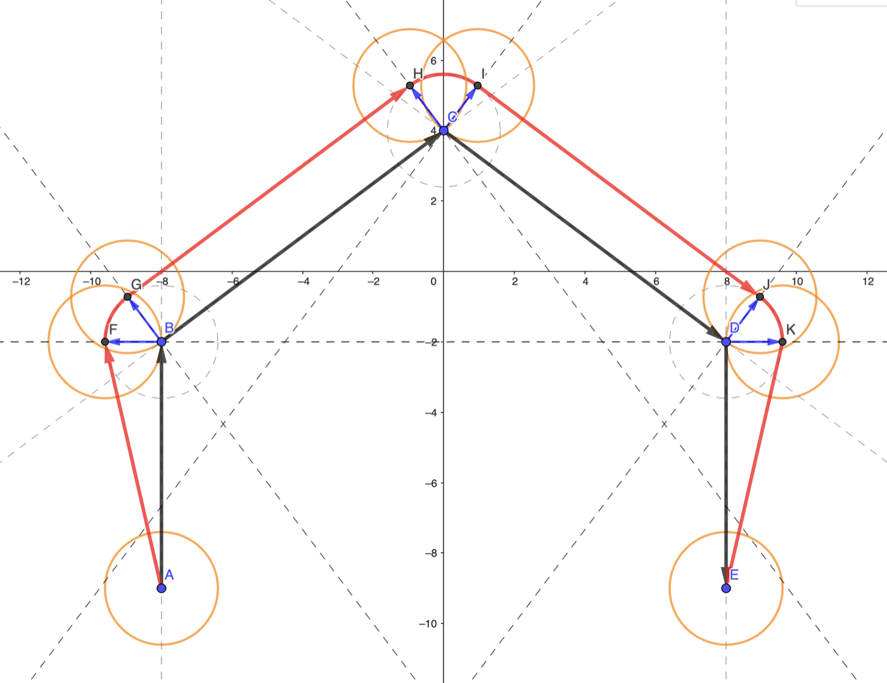
Rules
- You must work alone (I’ll check and compare results!)
- No help from my side, except these slides
- Set up a private GitHub repo and share it with me since the beginning
- When you are done, you must discuss your work with me
- If it works (no warnings) and it is not copied, you get 30/30
- If you implement advanced TRC or impress me with some other clever addition, you get 30/30 cum laude
- Must be done before the start of lessons in Sept. 2025
paolo.bosetti@unitn.it — https://pbosetti.github.io/DigMan/